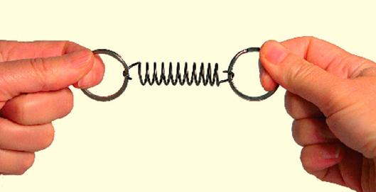

Rugó erő
A hatás - ellenhatás törvénye miatt a rugóra ható húzóerővel F(h) ellentétes irányú, egyenlő nagyságú erőt fejt ki a rugó (Fr).
A rugó által kifejtett erő egyenesen arányos a Δ megnyúlással.
A rugó által kifejtett erő és a rugóban létrejött megnyúlás hányadosát rugóállandónak nevezzük.
A rugóállandó jele: D.
Mértékegysége: N/m.
D= Fr/ Δ
A rugó által kifejtett rugalmas erő mindig ellentétes irányú a rugó megnyúlásával, nagysága pedig a rugó megnyúlásával egyenesen arányos.
(r) = -D * Δl
Ezt a rugó erőtörvényének vagy lineáris erőtörvénynek nevezzük.